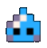

Small RPGs written in Lua with LÖVE and playable right in your browser. One game at a time, built in the spirit of the classics I enjoy to this day.

"A party of four slimes must defeat other much more powerful enemies to survive the arrival of a hero."
Who knows what I'll cook up next? Check back, or follow along on itch.io.